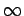
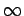

Inhalt Index DeskTop Bronstein

 Funktionentheorie Funktionen einer komplexen Veränderlichen Konforme Abbildung Einfachste konforme Abbildungen
Funktionentheorie Funktionen einer komplexen Veränderlichen Konforme Abbildung Einfachste konforme Abbildungen


Die konforme Abbildung in der Form der Exponentialfunktion
| w=ez | (14.18a) |
| (14.18b) |
Mit folgt:
| (14.18c) |
Wenn y die Werte von bis durchläuft und x von  bis
bis  variiert, dann durchläuft
variiert, dann durchläuft  die Werte 0 bis  und
die Werte 0 bis  und  von bis
von bis  . Ein Parallelstreifen der Breite
. Ein Parallelstreifen der Breite  der z-Ebene wird auf die gesamte w-Ebene abgebildet (s. Abbildung).
der z-Ebene wird auf die gesamte w-Ebene abgebildet (s. Abbildung).